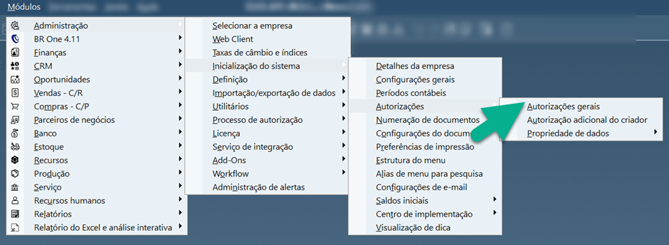

Introdução
O módulo de Compras do aplicativo BROne Franquias é responsável pelo controle de recebimento/devoluções de mercadorias com movimentação de estoque seguindo o fluxo abaixo.
IMPORTANTE: Os processos realizados pela Upper em relação aos cadastros mencionados em SAP – Upper estão condicionados a prévia contratação de aditivo contratual contemplando o modulo de cadastros, onde estão no escopo os cadastros de: PLU, Receita, Combo, Master, Ingredientes, NCM de Compras, Grupo de Materiais, Grupo de Itens, Catálogo do Parceiro de Negócios, Unidade de Medida de Compra e Tabela de Frete. Caso o módulo não esteja contratado, os cadastros deverão ser realizados pelo backoffice da franquia.
Cadastro
Para o módulo de compras, são pertinentes a realização dos seguintes cadastros para que os processos ocorram de forma correta:
Master – Itens configurados para controle de estoque;
NCM de Compras;
Grupo de Itens;
Catálogo do Parceiro de Negócios; e
Unidade de Medida de Compra
Os cadastros deverão ser realizados de forma manual no SAP através do caminho: Módulos > Estoque > Cadastro do Item. Para cadastro via API Arcos Dourados, acesse: Módulos > Estoque > BR One Franquias > Módulo de Integração > Integração de cadastros master.
Consulte o manual de cadastro para melhor exemplificação do processo.
Autorizão SAP
O usuário do SAP deve possuir as autorizações necessárias para uso do aplicativo e seus módulos (no caso, deverá possuir autorização no módulo de Compras, em alguma(s) funcionalidade(s) que desejar ou em todas).
Ao acessar as autorizações, selecione o usuário e atribua as devidas autorizações para o correto acesso e uso do aplicativo. A liberação deve ser feita aos usuários Gerentes com uso produtivo ao app.
Aos colaboradores apenas utilizados para abertura de caixa, por exemplo, não há necessidade de efetuar atribuições.
Configurações por Filial – SAP
Defina as configurações por filial na aba compras. Siga o caminho: Módulos > Administração > Definição > BR One Franquias > Módulos de Caixa e Cofre > Configurações por Filial
As configurações serão necessárias para que os documentos gerados no SAP possam ser feitos de forma automática pelo aplicativo. Sendo assim, defina as configurações de lançamentos de NF Break (1), Devolução de Compras (2), Solicitação de Compras (3) e Recebimento APP (4).